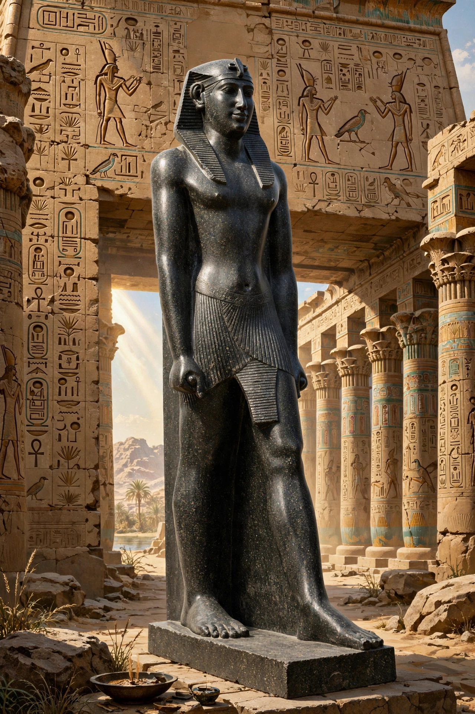

Psamtik II (Egyptian: Nfr-jb-Rꜥ Psmṯk), also known as Psammetichus II, was a pharaoh of the Twenty-sixth Dynasty of Egypt, reigning from 595 to 589 BC. He was the son of Necho II and father of Apries.
Psamtik II is best known for a major campaign into Nubia (Kush) in 592 BC, recorded in victory stelae at Karnak and elsewhere, in which Egyptian forces — including Greek and Carian mercenaries who left graffiti at Abu Simbel — penetrated possibly as far as the Fourth Cataract region and defeated the Kushite kingdom. He also undertook a tour of Phoenicia and continued his dynasty's building and archaistic art.
After his death his monuments were sometimes usurped by his son Apries. Several statues and obelisks of Psamtik II survive, including an obelisk later taken to Rome (the Montecitorio obelisk).